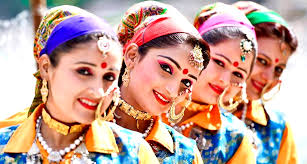

Uttarakhand, also known as Dev Bhoomi, has been the centre of religious and spiritual knowledge for ages. The history and culture of Uttarakhand are deeply connected with religion and celebrated everywhere. Many cultures and ethnicities coexist here with peace and harmony. Most of the state is divided into two regions named Garhwal and Kumaon. It is also home to Jaunsaries, Tibetan refugees, Bokshas, among others.

Uttarakhand has a 'Pahari' culture. Folk dance, music and festivals are a huge part of Uttarakhand culture. The land is blessed with the beauty of the Himalayas and ancient temples. Festivals. The typical Hindu festivals such as Diwali, Holi and Navratri are celebrated here with much zeal
The signs of the practise of Shaivism in ancient times along with Buddhism and Folk Shamanic religion was also found in the state. Famed for their simple lifestyle, honesty, and humility, the people of Uttarakhand reflect a sincere bond with nature and gods.